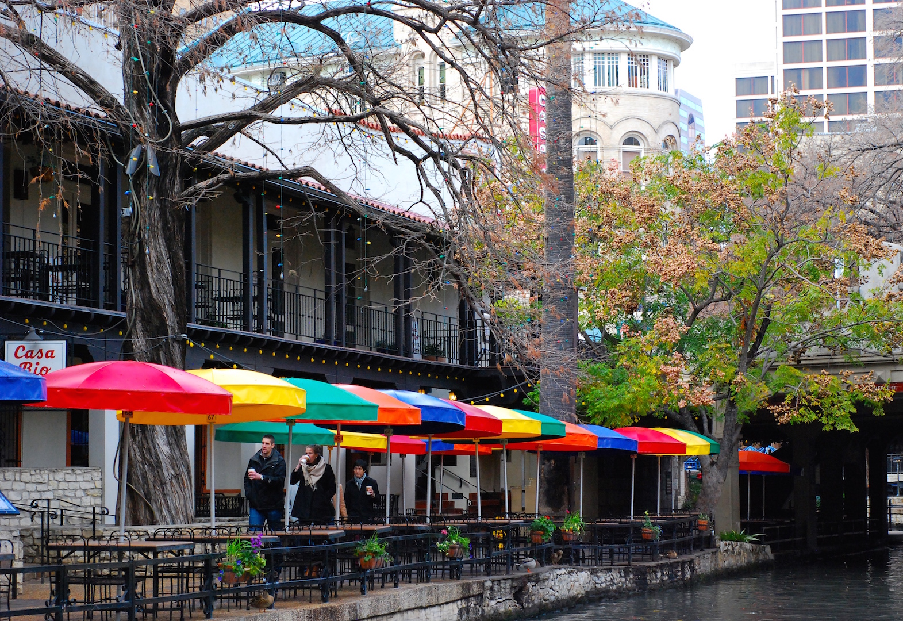

Fred Hohman
Applied Math & Physics Student at UGA.
Maker, Techie, and Drummer.
Home
About
Projects
Photos
Photos
I'm no professional photographer, but sometimes I take pictures. I recently started shooting with a
Nikon D80
, but I always have an
iPhone 6
at my side. You can also find me on
Instagram
.
1/
.
Description.

1/
.
Description.
Back to top.